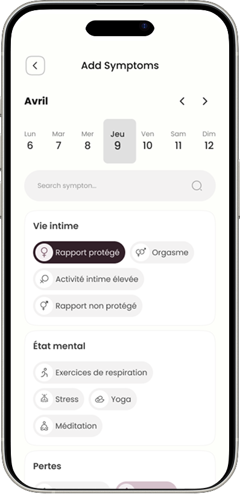

Suivi du cycle
Anticipez vos règles et gardez des repères simples au fil du temps.

NAYA est une application pensée pour suivre votre cycle, comprendre votre corps et poser vos questions librement, dans un espace simple, doux et discret.

Une façon plus douce de vivre son cycle
Suivre son cycle ne devrait pas être compliqué. NAYA vous aide à garder des repères simples sur vos règles, vos symptômes, votre humeur et votre énergie, sans surcharge d’informations.
Une façon plus douce de vivre son cycle

Anticipez vos règles et gardez des repères simples au fil du temps.

Notez ce que vous ressentez pour mieux comprendre votre corps.

Posez vos questions dans un espace plus humain, simple et rassurant.
Une façon plus douce de vivre son cycle
Plus qu’un suivi, un espace d’écoute. NAYA ne se limite pas à enregistrer des dates. L’application vous accompagne aussi lorsque vous avez besoin de comprendre un symptôme, d’exprimer un ressenti ou d’être orientée vers la bonne suite.
Découvrir le chat NAYA
Une façon plus douce de vivre son cycle
Parce que le suivi menstruel touche à l’intime, NAYA accorde une attention particulière à la confidentialité, au ton des notifications et à la simplicité de l’expérience.
Soyez parmi les premières à découvrir NAYA
Inscrivez-vous pour suivre l’avancement du projet et être informée de son lancement.